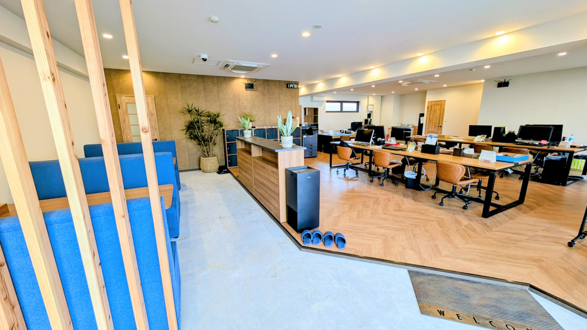
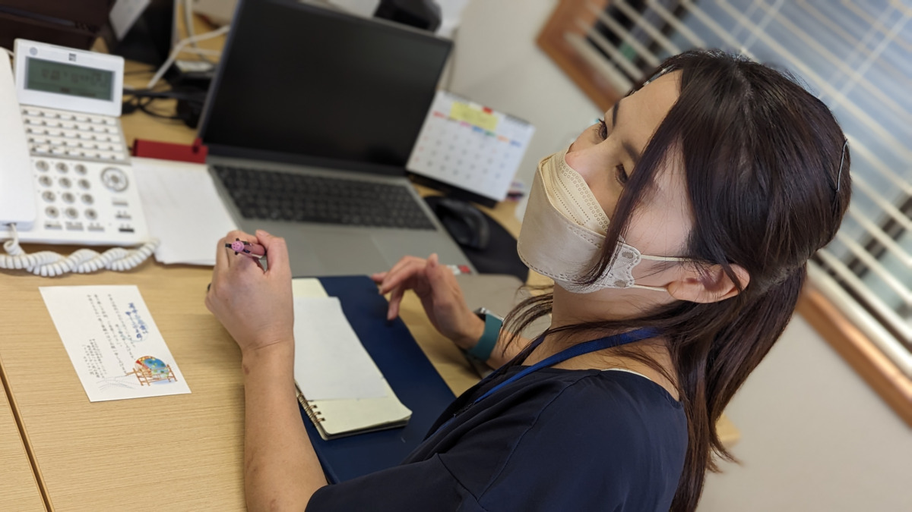
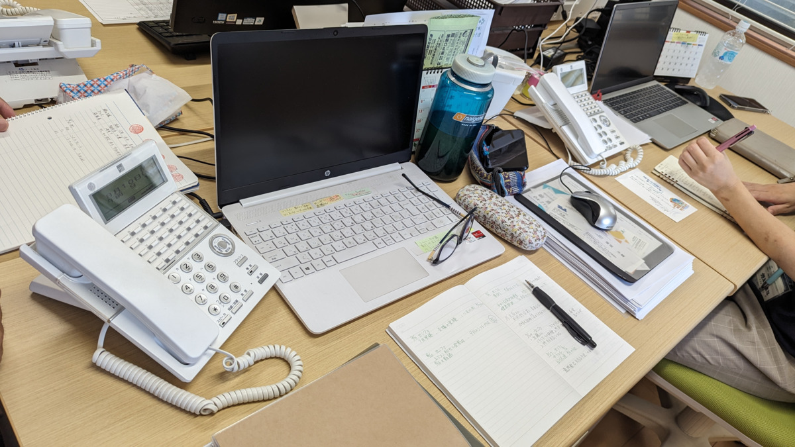

「介護保険はどう使うの？」「退院後の生活が不安…」。居宅介護支援事業所は、介護保険サービスを利用するための総合相談窓口です。クローバー創業の地・越谷で培った確かな経験とノウハウを受け継ぎ、流山の地域に寄り添います。同一拠点にある訪問看護・福祉用具事業所とのワンチーム連携で、迅速かつ柔軟なサポートをお届けします。


「介護サービスってどうしたら受けられるの？」「介護保険の申請や手続きが分からない…」など、介護に関する不安やお悩みは十人十色です。
クローバーが越谷の地で十数年にわたり培ってきた確かなノウハウを受け継ぎ、ご利用者様とご家族の想いやこれまでの生活リズムを何よりも大切に伺った上で、お一人おひとりに最適な介護サービスをご提案いたします。
住み慣れたご自宅や地域で、いつまでも安心して笑顔で過ごせるように。流山の皆さまの暮らしに親身に寄り添い続けます。
介護が必要な方やご家族が安心して在宅生活を続けられるよう、介護保険の申請代行やケアプラン作成、各種サービス事業者や医療機関との連絡調整を総合的に行う「介護の総合窓口」です。
ケアプラン作成や相談費用は全額介護保険から給付されるため、お客様の自己負担は0円（完全無料）です。
市役所への要介護認定申請代行から、デイサービス・ヘルパー・訪問看護の手配まで全てサポートします。
ご本人の身体状況や生活リズム、ご家族の想いを尊重し、無理のない最適な介護生活を共に考えます。
訪問看護・福祉用具の併設シナジーと、越谷で培った確かなノウハウで迅速に対応します。
同一拠点内に訪問看護ステーションと福祉用具事業所が併設。看護師や福祉用具専門相談員と日常的に連携し、医療的ケアや用具手配もスピーディに行えます。

クローバーが十数年にわたり培ってきた豊富なケアマネジメントの知見と行政・医療連携のノウハウをそのまま継承し、質の高いプランをご提案します。
流山市全域をカバーし、困ったときに迅速に駆けつけられる機動力。親しみやすいケアマネジャーが、ご本人・ご家族の不安を丁寧に解消します。
ご相談から日々の生活支援まで、以下のサイクルで継続的にサポートいたします。
新規の利用者様やご家族と面談し、現在のお困りごとや今後の生活に対するご希望を丁寧にヒアリングします。
健康状態、生活環境、ご家族の状況などを専門的視点から分析し、解決すべき課題や自立への目標を明確にします。
課題や目標に合わせて、デイサービス、訪問看護、ヘルパー、福祉用具貸与などを最適に組み合わせた計画案を作成します。
利用者様・ご家族と各サービス事業者の担当者を交えた会議を主催し、チーム全体で共通認識と合意を形成します。
毎月必ずご自宅を訪問し、プラン通りに快適な生活が送れているか、心身状態に変化がないかを継続確認します。
利用実績に応じた国保連への給付管理事務や、定期的な要介護認定の更新・区分変更手続きを確実に代行します。
プラン作成にとどまらず、流山での在宅療養を支える幅広い周辺業務・多職種連携を担います。
流山市内外の病院医師・看護師・医療ソーシャルワーカー（MSW）と退院前から連携し、退院当日から安心してご自宅で過ごせるよう環境を調整。主治医意見書の発行依頼や医療処置の調整も迅速に行います。
流山市役所への要介護認定の新規申請や更新手続きを代行。「調査員の前だと本人が張り切ってしまう」といった不安に寄り添い、日頃の正確な状態を調査員に伝える立ち会いサポートも承ります。
転倒予防や安全な移動のための手すり設置・段差解消など、介護保険住宅改修に必要な「理由書」を作成。同一拠点の福祉用具事業所とも連携し、最適なベッドや車いすの選定・即時納品を助言します。
流山市の地域包括支援センターが主催する地域ケア会議等に積極的に参加し、困難事例や地域課題を共有。契約前であっても、地域住民の皆さまからの「ちょっとした介護相談」にも温かくお応えします。
| 事業所名 | 居宅介護支援事業所 介護屋本舗 流山 |
|---|---|
| 介護保険事業所番号 | 1272502905 |
| 管理者 | 松川 澄子 |
| 所在地 | 〒270-0156 千葉県流山市大字西平井 2-2 コージィコートナカムラ 101 |
| 営業時間 | 08:30 〜 17:30（月曜日〜金曜日 / 祝日営業） |
| 対応エリア | 流山市全域および近隣エリア（松戸市・柏市・野田市等ご相談可） |
| ご利用料金 | 自己負担 0 円（全額介護保険給付） ※相談・ケアプラン作成・申請代行等すべて無料 |
| 介護総合相談 | 介護保険制度のご案内、在宅生活全般のお悩み・契約前相談 |
|---|---|
| 申請・調査支援 | 要介護認定の新規・更新・区分変更申請代行、認定調査立ち会い |
| ケアプラン作成 | 課題分析（アセスメント）に基づく居宅サービス計画書の作成 |
| 訪問看護・用具連携 | 同拠点スタッフとの即時連携による医療処置・ベッド等の手配 |
| 退院調整・住環境整備 | 病院MSW連携、住宅改修理由書作成、福祉用具選定アドバイス |
居宅介護支援（ケアマネジメント）に関してよくいただくご質問にお答えします。
いいえ、一切かかりません。ケアプランの作成や介護相談、要介護認定の申請代行などの居宅介護支援サービスは全額介護保険から給付されますので、お客様の自己負担は0円（完全無料）です。
ケアマネジャー、訪問看護師、福祉用具専門相談員が同一拠点で日常的に顔を合わせているため、「急に点滴や処置が必要になった」「退院にあわせてベッドをすぐ手配したい」といった場合でも、タイムラグなく迅速かつ密に連携して対応できる点が最大の強みです。
はい、お任せください。流山市役所への新規要介護認定申請の代行はもちろん、認定調査当日にご家族様と一緒に同席し、日頃のご本人の生活状況やお困りごとを正しく調査員へ伝えるサポートも行っています。
はい、退院前の早期からのご相談を強くおすすめしております。病院の医療ソーシャルワーカー様や医師と連携して退院前カンファレンスに参加し、退院当日から安心して生活できるよう事前に準備を整えます。
はい、大歓迎です。「親の物忘れが心配」「介護保険で何ができるか知りたい」といった段階の、ちょっとしたご相談窓口としても対応しております。お気軽にお電話や来所にてご相談ください。
「介護が必要になったけれど何から始めればいい？」「訪問看護や福祉用具も合わせて相談したい」など、越谷のノウハウを継承し訪問看護・福祉用具と連携する流山のケアマネジャーが丁寧にお応えします。